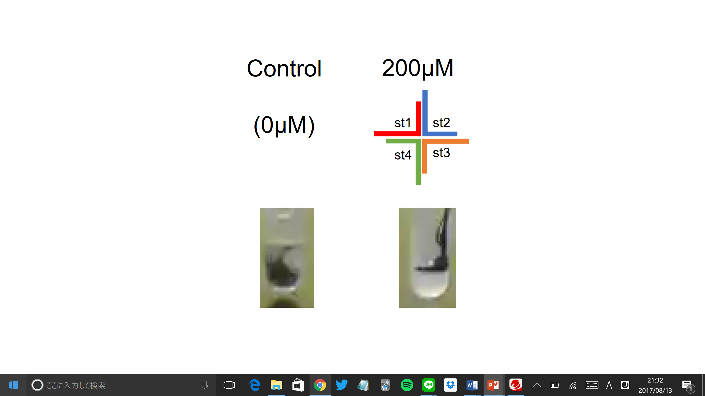
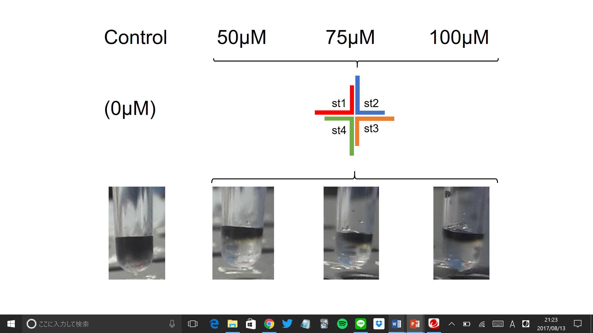
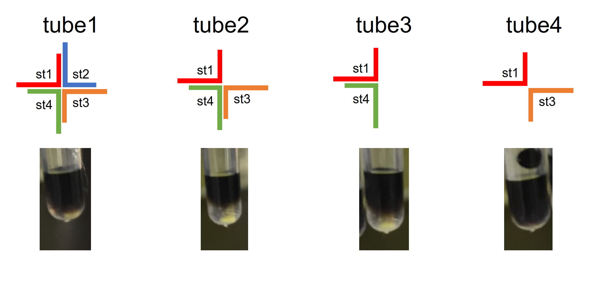
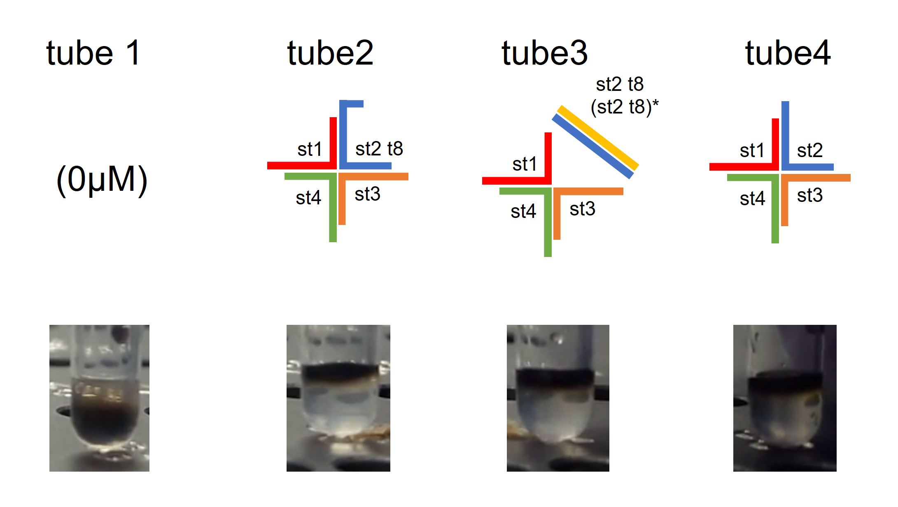
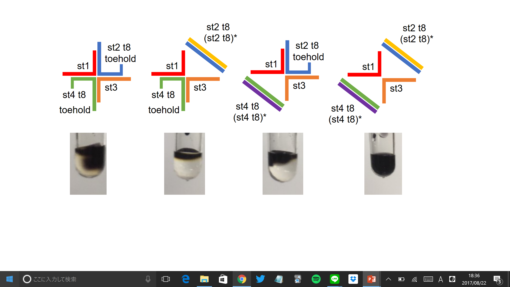

Results
1, Experiment to see the gel is formed
Result: Formation of a hydrogel

Fig.8: From the fact that the ink did not sink, it was found that the hydrogel was formed.
2, Experiment to find the optimal DNA concentration
Result: Formation of hydrogels at the minimal concentration of 50μM

In each of the tube whose strands concentration is or is over 50μM, which is the minimum concentration in this experiment, the gel was formed, preventing the ink from sinking.
3,Experiments to check the state of gel by changing combination of sequences
Result: Identifying a strands pattern that does not form a gel

Fig.10: The ink sank in the tube containing both st1 and st2, while it did not sink in the tube whose strands pattern is st1 and st3, which are the opposite strands to each other. This implies that the gel was formed in the foremer ones but not in the latter one.
4, Experiments to check the state of gel by adding complementary strand of st2 t8 and st4 t8
4-1, only st2 t8
Result: Failure to collapse the hydrogel

Fig.11: The ink did not sink in each of the tube, indicating the formation of hydrogels. The result of tube 2 reveals that (st4 t8)* does not collapse the gel.
4-2, st2 t8 and st4 t8
Result: Collapse of the hydrogel

Fig.12: In tube 4, which added both (st2 t8)* and (st4 t8)*, the ink sank, implying the collapse of the hydrogel. The ink did not sink in the other tubes, indicating that the gel did not collapse.